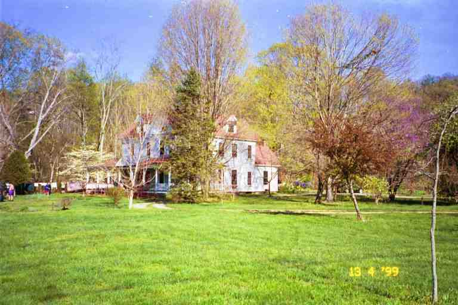
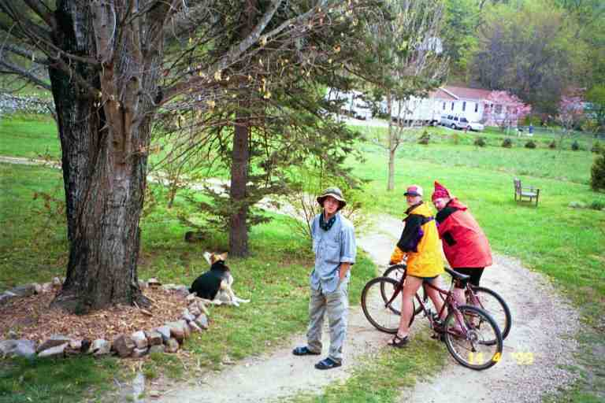

An Appalachian Trail hike is a walk in the Mountains from Georgia to Maine. You separate yourself from the luxuries and conveniences of everyday life and revert to a simpler way of life. You may spend days at a time in the woods, walking up mountains, hiking through hardwood and evergreen forests, strolling in dark lush woods and across hot fields, and stopping often to take in a view or absorb the peacefulness.
Although the hike involves considerable physical effort, as well as physical and mental hardships, the whole process can be calming. You may speed up the pace once in a while to reach a goal, however, there is a lot less incentive to rush because the next town is likely days away rather than hours or minutes away as it would be in a car. As a result, you learn patience.
Even if you have a hiking partner, most of the hiking is done alone with your own thoughts. On the other hand you develop a strong bonds with your fellow hikers who are going through the same adventure as you. In our minds, the friendships we developed were one of the most important aspects of our hike. I suspect that has been clear in the 12 previous segments and I hope it will be evident in the telling of the remainder of the adventure. This special relationship between hikers becomes more obvious in trail towns.
Trail towns are situated on or near the trail. Hot Springs, North Carolina is the first town that the trail goes through. The trail goes right down the main street as it does in a few other towns. In all cases, the trail enters a town in order to take a bridge to get across a river. Hot Springs is the home of an April trail festival every year, called Trailfest. The website is: http://hotspringsnc.org/trailfest/
Many hikers take one or more "zero mile" days in the most popular trail towns, thus allowing people to catch up to friends they have not seen in some time and allowing others to catch them. Thru-hikers have a significant effect on towns in the south because a high percentage of hikers are still on the trail and because some of the towns are small and somewhat remote.
I hope the story of our stay in Hot Springs will give added insight into the camaraderie that exists on the trail. I will also add quotes from a few hikers who are a lot more eloquent than I am on this subject. I must warn you that reading the quotes will make you feel all warm inside and could possibly incite you to hike the trail.
*****************
It was still very cold when we arose on the morning of April 13 at Walnut Mountain shelter. We had high hopes for the day because we were heading to town, Hot Springs, NC, about 12 miles away. The contour map indicated that we were starting at 4200 feet, dropping to 3700 feet and then climbing to 4700 feet within the first 2.5 miles. The trail would then drop quickly to 2500 feet where it would generally remain for about 7 miles before going down to town at the 1400 foot level. The walking was good as we hurried along. At the lower elevations we came across little patches of tiny white wild flowers.
In the early afternoon, we heard the sounds of traffic long before we made our final descent to town. We finally came out of the woods on to the lawn of the Jesuit House of Prayer, a retreat located above the town on the southern edge. It offers bunk space for 25 hikers, shower, etc., for $9 (or only shower for $2). Work exchange was available instead of donation. A number of hikers looking for a quiet place stayed here. We checked the map and information on their outside Bulletin Board and proceeded to town, following the trail through a small wooded area leading further down the mountain.
When we came out of the woods, the trail turned left down the Main street to town. We met RAINDANCER who was heading in the opposite direction. She said she was heading to Duckett House where she heard they allowed camping on their lawn. We continued on, looking for Elmer's Place in the center of town. Elmer's is a bed and breakfast in an old Victorian Home in the center of town. It offers a shared room and shower for $12 per night per person and work exchange is also available. Tents can be set up in the small backyard for a small fee with full house privileges. Elmer has a tent already set up, likely for use by hikers without tents. SLIPPER tells of staying in Elmer's tent and spending a few hours soaking in an old bathtub (the kind with feet) filled to the brim. Elmer's place was famous for its large home-made vegetarian suppers ($8) and breakfasts ($5), served in a lavish dining room.
When we arrived in front of Elmer's there were a number of hikers sitting on the sidewalk out front who told us that it was already full. The hiker hostel located on a back street was also full. It offered bunks for 15 hikers and a fully equipped shared kitchen for $10. SEABASS was among the group and told me to go check the Alpine Inn where he and Aimee would be staying that night. He said that Aimee was on her way from Chicago and would be arriving within the next few hours.
MA sat down on the sidewalk while I went down the street to the Inn which also turned out to be full. When I returned, SEABASS said we could stay with Aimee and him in their room. We flatly refused and thanked him profusely. It was a generous offer as he had not seen Aimee for at least a month. Who should then appear on a bicycle but BALTIMORE JACK, the wild looking chain smoking hiker who had unnerved us a few days before at Groundhog Creek shelter. He was staying at Duckett House and the bicycle was one of a number available to guests. He offered to let me use it to go check for a room at Duckett House. PILGRIM asked me to check for him also.
I managed to obtain the two rooms. There was no requirement to pay up front, I simply mentioned our trail names to a person working in the kitchen, who said he would hold the rooms for us. I then bicycled back to get MA and PILGRIM. When I got there, SEABASS said that he had called Aimee and that she also wanted us to stay in their motel room. We thanked him again for the offer of trail magic.
Duckett House was a hive of activity with hikers everywhere. There were tents set up on the lawn and some set up next to the stream that ran through the ravine behind the house. The cost for tenters was $6 per night including full house privileges. Work exchange would get you free tenting and a free vegetarian breakfast in the morning.. During our stay CHRISTOPHER ROBBINS painted the porch floor, did a little landscaping around some of the large trees on the property, and did some weeding in the vegetable Garden with GIT BACK, a young girl hiking with her small dog, CASSIDY. Two other hikers, QUIK and his wife NO TIME, did the House's laundry. QUIK got his name because he liked Nestle's Quik, and NO TIME 's name came from the fact that she did not have a watch because time was not important to her during her hike.
The first attached picture shows Duckett House. Notice that the trees are budding and that spring has arrived. This is in marked contrast to the cold temperatures on the mountain the previous night. A close examination also reveals QUIK hanging the sheets on the clothes line. The second picture was taken from the porch and shows CHRISTOPHER ROBBINS (standing next to his handiwork around the large tree), his dog TIGGER, and also QUIK and NO TIME on Duckett House bicycles.


We claimed our room on the main floor at the front of the house, just inside the front door. It was a beautifully decorated large comfortable bedroom with an old brass bed. We did not register and nobody took down our information. We had a shower and checked out the house. It was a large house with a number of guest bedrooms on both floors. There were three bathrooms, including a large one on the main floor with a deep old fashioned bathtub with feet, and a large selection of bath oils. I have often looked back with regret at the fact that I did not take advantage of it. There was a living room and dining room along one side of the house and a large kitchen at the back of the house, where someone was preparing a number of vegetable dishes. On the outside there was a large porch running along the front and part way down both sides.
We walked back to town where we met SEABASS and Aimee and then went to have supper at the Smoky Mountain Diner. The back room was filled with thru hikers, including many that we knew. The food was very inexpensive and there was lots of it. After our meal, we were not given a bill, we simply went to the front room and told the cashier what we had ordered. This is a very trusting town, even with the hiker population.
That night a number of hikers gathered around a campfire that they had built down by the stream. We did not join them. Instead we went to bed early and went to sleep to the sound of hikers chatting on the porch.
The next day began with a vegetarian breakfast which was included with our room. That morning we went to town and bought food supplies at the local outfitter and the grocery store. While at the outfitter, we each bought a pair of zip-off pants. These are long pants with legs that can be removed with zippers to convert into shorts. We figured these would be more versatile than long pants and would provide us with a pair of shorts to be worn in town while washing our hiking clothes.
I also made a change in our fuel bottles. We had started out with an 11 ounce bottle but had switched to a 22 ounce bottle that I purchased on the fourth day of our hike at Neels Gap, when I became concerned that 11 ounces of naphtha gas (Coleman fuel- white gas) would not be sufficient to get us through long sections of the trail. I now found that there was a drawback to the 22 ounce bottle. The bottles are used by attaching them to the camping stove and are pressurized to turn the liquid fuel to gas for cooking. I found that the 22 ounce bottle would not pressurize very well when it was low on fuel. I therefore purchased an 11 ounce bottle and a 7 ounce bottle for back-up.
I gave the 22 ounce bottle to COY DOG. I think he intended to sell it. He was broke and had already sold his backpack and had obtained 2 jobs in local restaurants to raise funds to continue his hike. He had also struck a deal with Duckett House to tent there for a while. We had met COY DOG on two previous occasions, the last time with FOODBAG going through NOC. He had spent the last while hiking with FOODBAG. We would not see him again.
During the day we spent time on the porch reading, talking to hikers and keeping away from CASSIDY and TIGGER who spent a lot of time snarling at each other. We sorted and repackaged our food on the porch as did the many hikers who received maildrops in Hot Springs. Some hikers spent the afternoon lazing around the living room watching a sentimental video with Robin Williams. It was a very relaxing, quiet and pleasant day. We also heard from some hikers (PILGRIM, and IRMO and LITTLE DIPPER) who went to soak in the famous hot springs. Actually it was in hot tubs at the edge of town which were heated by water from the hot spring.
During the afternoon, someone came in the front door, glanced in our room and greeted us by name. We had never seen him before. He said he saw a picture of us taken by his boy scout troop who had spent the night with us at Peck's Corner in the Smokies. This was THE GOOD SAMARITAN. What an eerie coincidence. He said he had developed health problems and was off the trail for a while.
That day we had lunch at a restaurant down by the outfitter and supper again at the Smoky Mountain Diner. These were two occasions to meet and socialize with some hikers who were not staying at Duckett House (this is where we first met ALASKA). Other hikers included FUNK THAT, PHIN, SONGBIRD, SLIPPER, M&M, SIR-P-A-LOT, and ARIZONA. Someone mentioned that SUNDOG was staying at the hiker hostel, and I asked that they tell him where we were staying.
During our stay in town, we were constantly seeing and meeting thru hikers. While walking down Main street, I noticed a heavy man across the street. He likely weighed close to 300 pounds. He was wearing a tight black long sleeve sweater and what seemed like black spandex pants. He shouted to us from across the street, asking if we were thru hikers. I thought I knew who he was so I asked his name. He said he was BEORNE. I replied that I had figured that is who he was. He seemed pleased to be recognized.
BEORNE was close to becoming a trail legend. I think he first hiked the trail in 1995 and that hike figured prominently in an article about the trail in Outside magazine. At that time he carried an 80 pound pack. His pack was stolen in Hot Springs and the thief was charged with grand theft because the value of the pack and contents was more than $1000. On the plus side BEORNE said he loved the hot tubs in Hot Springs. The article reported that he was suspected to have yellow blazed a good part of the trail. Apparently he did the entire trail a few years later.
When we met BEORNE on a later occasion (Kincora hostel in Tennessee), he proudly told everyone that he was mentioned by his real name, Woodrow Murphy, in "A Walk in the Woods" when he was on the trail in 1996; he will even tell you the page number. BEORNE is now on the trail every year, hiking portions and then yellow blazing ahead to stay among the north bound hikers. He is quite a character and has chosen this method to live among the trail community every year. There will be more BEORNE stories further on in the trip.
The second evening we were visited in our room by SUNDOG who walked up from the hostel. He arrived with a big smile on his face, genuinely pleased to see us. We spent about an hour in conversation. . He was no longer as shy as before. He said the trail had changed him and he was not as introverted as he once was. It was wonderful to talk to him and hear what he had been up to since we last saw him at NOC. He informed us that BADGER was a day behind him and would be arriving the next day. We would not see either of them again although we did get updates on BADGER's progress from other hikers.
The second morning we packed before going into the dining room for another delicious vegetarian breakfast. I then went to settle our bill with one of the two owners. We had not registered and he only knew us by our trail names. We had spent two nights here and he had no idea who we were. We could easily have skipped out.. The total cost for the two nights, including breakfasts was $80.
We then put on our bags and hiked through town, across the bridge and back into the woods.
**************
Here are the three extracts I mentioned. The first two were written while they were staying at Hot Springs, while the one from SINGLE MALT was written sometimes later. These pieces echo our feelings for the people and the lifestyle. Enjoy!
*****
Extract from her journal at www.trailplace.com (no longer online)
I never, never expected to tap into such a vast range of emotions. I realize, perhaps for the first time in my life, that I am both utterly vulnerable and, on the other end of the spectrum, surprisingly capable of fending for myself despite the odds. I've found, too, that no much as I enjoy the company of so many new-found friends on the trail, my hike is actually an incredibly personal endeavour. I can't emphasize enough how much I value the amazing, treasured camaraderie amongst most of the thru-hiker community. I would even liken it to a family. I've made some wonderful friends out here. Yet I still do most of my walking alone, and find my greatest peace in doing so. I almost always tent instead of shelter for the same reason. I'm learning how to watch myself from within instead of from the eyes of others. Out here there are no performance reviews, no judgments, no responsibilities other than those I place upon myself. And it interests me & pleases me that my actions do not diminish me in any way amongst these people. I guess that's what everyone means when they say "hike your own hike." No matter how odd or even you go, your approach is never questioned. It's universally understood that no matter what your miles are, no matter what you carry on your back, no matter what your belief system is, what your budget allows, whatever, you're an integral piece of the mosaic of hikers, as lowly or lofty as you choose to go. I would never say that this trek is an ideal world; far from it. But I will say it's a simple world, one where necessities and complications are pared to a minimum.
************
Extract from her journal at http://trailplace.com/c99journals/312reese/312reese_index.html
This is a beautiful place. I can see how it would be tempting for a person to get stuck in Hot Springs. The easy going, not time mentality of this town is contagious. I have to get out tomorrow morning or I will be looking for a house. I like it here, but I have a hike to do. I'm finding peace out here. the kind you see rarely, and only on the Grizzly Adams movie. There must be 30 hikers in this town. Everybody is out here for their own reason. It's great to sit with people so different and yet so similar and talk about life. I'm learning a lot about people. It's funny but in real life we have few friends and we don't realize how out of practice our social skills are. Out here you make first impressions all the time and then proceed to develop a relationship with each person. I don't think I've listened this much in my entire life. There's something about this trail life that I like. I've got a peaceful easy feeling that I want to keep for the rest of my life. What can I do to make sure it doesn't go away when I'm done with this trip?
***********
SINGLEMALTExtract from his journal at http://users.erols.com/johndsc/welcome.htm
It is unique here. Bonds form quickly and strong. You may see another hiker for a day or two, and never see them again, or run into them a month or two down the road. There is no selfishness here. Everyone is willing to share everything they have, and to help another in anyway possible. We look out for one another and ask nothing in return. There is no such thing as lying, cheating, or stealing. There is only the common goal of pushing North, the experience of shared hardship, and the peace and pleasure of conversation after a hard day, spoken quietly so as not to disturb the peace of the night in the forest, and the ceremony of cutting your last Snicker bar into 7 equal pieces so everyone can have some. This may be what God meant for society to be like.